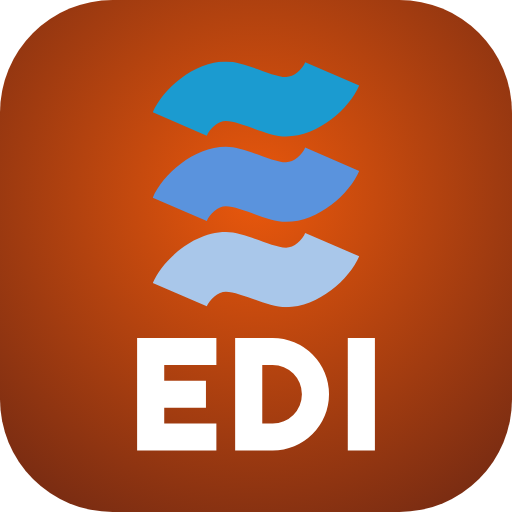

EDI Beta
Versi uji Stage 2 — hanya untuk David. Tim tetap memakai EDI biasa.
Membuka EDI Beta…
Buka EDI Beta
Pasang di HP Android
Tekan Pasang aplikasi. Kalau tombolnya tidak muncul: menu ⋮ di Chrome → Instal aplikasi (atau Tambahkan ke layar utama → Instal).
Pasang di iPhone
Buka halaman ini di Safari, tekan Bagikan (kotak dengan panah ke atas), lalu Tambah ke Layar Utama.
Masuk dengan akun Google @delosaqua.com milik David.